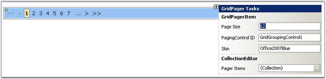

The GridPager control is used to page the data and to display as a navigation control for databound controls that implement the IPagingContainer interface.
You can associate the GridPager control with the PagingControlID. This would bind the GridPager with the databound control. Also, the GridPager has easy skinning mechanism. You can associate the css with some default class names.
Pager Items
In order to render out the navigation elements, you must add the Pager Items to the control. The following list of pager items can be used with the GridPager.
· NextPreviousPagerItem: enables users to navigate through pages, one page at a time, or to jump to first or last page.
· NumericPagerItem: enables user to select a page by page number.
· TemplatePagerItem: enables user to create custom paging UI.
Accessibility
The default markup that is rendered requires client script to do postbacks. If the pager items are configured to use images, you cannot explicitly specify the alternate text for the images. The images use the Text property as the alternate text. As an alternative, you can use the TemplatePagerItem, to define exactly what the pager displays.
The Pager also features the Look and Feel available for the GridGroupingControl.
Through Code
Link the css file source to the GridPager for the Look and Feel and then the Pager control is included.
|
[ASPX]
<link id="Link1" type="text/css" rel="Stylesheet" href="css/GridPagerOffice2003Blue.css" /> <syncfusion:GridPager ID="GridPager1" PagingControlID="GridGroupingControl1" runat="server" Skin="Office2003Blue"> <PagerItems> <syncfusion:NextPreviousGridPagerItem FirstPageText="«" PreviousPageText="‹" ShowFirstPageButton="true" ShowPreviousPageButton="true" ShowLastPageButton="False" ShowNextPageButton="false" /> <syncfusion:NumericGridPagerItem ButtonCount="7" /> <syncfusion:NextPreviousGridPagerItem LastPageText="»" NextPageText="›" ShowFirstPageButton="false" ShowPreviousPageButton="false" ShowLastPageButton="true" ShowNextPageButton="true" /> </PagerItems> </syncfusion:GridPager> |
